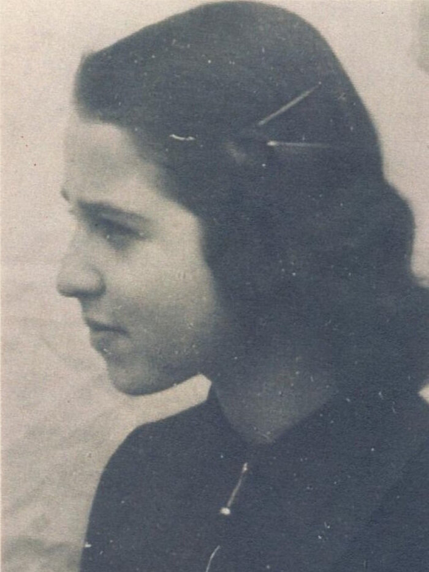

Portrait d’archive
Lotte Adler
Lotte ADLER
Lotte ADLER est née le 12/02/1926 à Mannheim en Allemagne.
Rassemblée à Lyon, elle est déportée à Auschwitz le 11/02/1943 par le convoi n°47. Elle est morte en déportation.
Dernière adresse connue : 22, rue Duguesclin (Lyon)
Nom : ADLER
Prénom(s) : Lotte Eva
Date naissance : 12/02/1926
Âge (ans) : 16
Lieu naissance : Mannheim
Pays ou département : Allemagne
Lieu rassemblement : Lyon
Dernière adresse : 22, rue Duguesclin
Ville : Lyon
Code postal : 69
N° Convoi : 47
Date déportation : 11/02/1943
Informations diverses : Fille de Ludwig Adler (16/07/1892, Frankenthal, Allemagne) et de Alice Liesl (19/05/1900, Bamberg, Allemagne), allemands réfugiés en France. Lotte séjourne au Château de Montintin (OSE) à Château-Chervix de 1940 à juin 1941 puis rejoint ses parents (Source: AJPN). Ils sont réfugiés à Lyon où ils habitent au 22 rue Duguesclin puis à Chambost-Allières près de Villefranche-sur-Saône. Ils sont arrêtés et regroupés à Chalon-sur-Saône. Déportée avec sa mère Alice (19/05/1900, Bamberg, Allemagne), 42 ans et son père Ludwig (16/07/1892, Frankenthal, Allemagne), 51 ans.
Adler (Lotte), née le 12 février 1926 à Mannheim (Allemagne), décédée le 16 février 1943 à Auschwitz (Pologne). JO [et non Lotte Adler (08/02/1925, Frankfurt am Main) décédée le 26/03/1943 à Sobibor]
Adler, née Adler (Alice) le 19 mai 1900 à Bamberg (Allemagne), décédée le 16 février 1943 à Auschwitz (Pologne). Adler (Louis, [Ludwig]), né le 16 juillet 1892 à Frankenthal (Allemagne), décédé le 16 février 1943 à Auschwitz (Pologne) (JO).
Lieu de déportation : Auschwitz
Lieu de départ : Drancy
Nombre total de déporté·e·s du convoi : 998
Gazé·e·s à l'arrivée : 802 (80,4 %)
Survivant·e·s en 1945 : 14 (1,4 %)